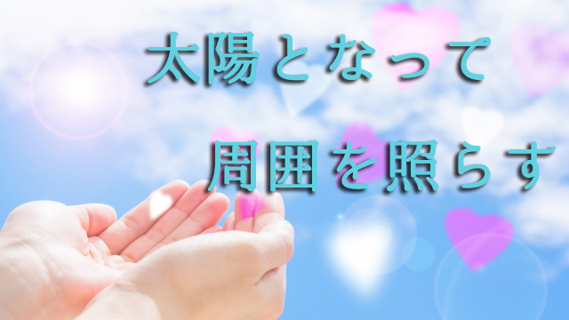

最近どういうわけか色々な人から相談を持ちかけられる。子どもをもつ親だけではない。よく行くお店の店主だったり学校の先生だったり普通のサラリーマンだったりと多種多様。そういう人たちの悩みは共通している。
組織の中での人間関係をどううまく乗り切るか。たいていは部下やスタッフが思うように動いてくれないということ。彼らのやる気を引き出し全体を発展させていくにはどうすればよいか。
一つの集団なり組織なりを力強く発展させたいなら答えはただひとつ。スタッフの活性化！これに尽きる。
ちょっと考えてみてもらいたい。あなたが客だとしてどんな店に入りたいだろうか。居酒屋でもファミレスでもコンビニでもいい。レストランでも美容院でも歯科医院でもよいが、店員やスタッフがドヨ～ンとよどんでいるところか（笑）逆に明るく開放的な店か。答えは明白だろう。
人は活気のあるところに集まる。これはエネルギーレベルの高いところほど吸引力があるということだ。よく分からないが何となく「元気がありそう」で「活発な雰囲気」のあるところに人は吸い寄せられていく。人気のある店はどこもスタッフがイキイキと働いていてエネルギッシュな気を発している。
お店だけではない。会社や学校も同じ。活気に満ちた部署は売り上げも多いし、やる気があふれる先生の多い学校は生徒もイキイキしている。要するに生産性は上がり人も集まる。内部のエネルギーは外部に波及する。
これは法則といってもよい。
だから先の相談に来る人たちへの回答もシンプルだ。「あなたの担当する部署や経営している店のスタッフが活気あふれる存在になるようにする」こと。これだけ。
だが、たいていは「ヘッ？」という顔をする。多分「やる気と活気は分かるが、それが難しいのだ。具体的にどうすれば…？」ということだろう。あるいはもっと知的な人は「組織の理念とか目標とかを掲げて団結を促すことが大事ではないか」と言うかも知れない。
確かに「どうすれば」とかの方法論も大事だし、理念や理想目標を掲げることも必要ではある。
だがそれよりも大切なこと、方法論を考えるよりも大事なことがある。
それはリーダーであるあなたの存在が愛に満ちていることだ。
他人をどうにかしようとするな
愛などというと「人を愛することか」と思うかも知れないが少し違う。他人のことをどうこうするとかではなく、つまり他人を意識するのではなくまず自分の内面に灯をともすこと。
あなたが自分の内面にエネルギーの炎を燃やし、自らを肯定しやるべきことに情熱と愛をもって臨むこと。そうして自分の内部エネルギーを高めそれを放射することで周囲も自ずと活性化する。
人はいつも「他人をどうにかしよう」とする。初めて部下をもった、課長になったプロジェクトチームのリーダーを任された。こうなると「どうやってスタッフのやる気を引き出すべきか」と考える。書店で「部下のやる気を促す法」などを読んで、そうか信頼関係が大事なんだ。もっとコミュニケーションをとろうなどと決意する。そしてホメたりオダテたり一緒に「メシに行って」悩みを聞いたりする。だが、最初のうちはうまくいっても続かない。またすぐに別の問題が発生する。次は少し叱ってみたり、改善点を提案したり親身に相談に乗ったりするが、解決することは少ない。まるでモグラたたきのように次々と問題解決に追われすっかり疲弊してしまう。
人を説得したり懐柔したり人情に訴えても、相手をコントロールしようとする思惑がある限りうまくいかない。見透かされるのがオチだ。
前提が「他人をどうするか」である以上、他人に振り回され続けるしかない。
だから逆向きに捉えなければならない。
私たちは日頃外側にばかり目を向けている。起こる出来事、状況、他者の顔色ばかり窺っている。その外側へ向けたライトの光を内側へ向けること。ライトが外を照らしているとき私たちの内面は暗闇になっている。内側からわき起こる吸引力あるエネルギーはゼロになっているのだ。
つまり解決すべきは外側の問題ではなく自分のあり方のほう。ここを間違えるからうまくいかないのだ。他人を自分の思う通りに操ろう、都合よくうまく使おうとしているとき、自らのエネルギーはすべて他人に注ぎ込まれ結果として自分の活力が失われる。ガス欠の状態。
周りに与える温かい放射の熱もなく、一緒に創造していこうという、ワクワクする高揚感にもつながらない。
これがすなわち愛のない状態。
太陽となって輝く
だからまず自分を愛で満たすこと。愛のエネルギーで自分自身をチャージし続けること。これが何よりも優先されなければならない。愛とは人から与えてもらうものではない。自分の内奥からわき出てくるものだ。それをしっかりと感じること。イメージとしてはその高い愛のエネルギーに全身が包まれているような様子だ。
そしていま自分がやろうとしていること―それが何であろうと―そのことが多くの人に役立つと信じて喜びを感じながらやる。自分のエネルギーを行動に乗せて放射するイメージで行動する。
他人を操縦するためではない。あくまで自分がその愛のエネルギーに動かされていることが大事。そうすれば行動の一つひとつ、言葉やアイディアの一つひとつが純粋で質の高いものになる。そのエネルギーは周囲に伝わり活性化をもたらす。エネルギーは循環するからだ。そうすると無理に説得したり指示を出しまくったり、まして「やる気のない奴をどうしたらいいか」などと算段する必要もなくなる。彼ら自身が「どうすべきか」自らで考え動き出すからだ。組織の大小はあまり関係がない。リーダーの高いエネルギーは必ず成員に伝わるからだ。
こうして活気という名のエネルギー（愛）は集団内を循環し始め、やがて磁場となって外側の人やモノも引きつけることになる。
よく経営者などが「売上げを上げるにはどうすれば」と悩み、貸借対照表とにらめっこしたり宣伝方法や店の立地条件などを考え抜くが大半が失敗に終わってしまう。スタッフがついて来ず自信を失くす上司も多い。そして誰もが「人を動かすことは難しい」と肩を落として戦線から離脱する。私はそんな人をたくさん見てきた。彼らは数字だとか人の動かし方とか合理的根拠を求めていた。だが合理的（科学的）根拠を求める姿勢そのものが失敗の原因だったことに気づかない。
根拠を求める姿勢には怖れの感情が潜んでいる。もしうまくいかなかったら…人がついてこなかったら…など未知への恐怖だ。だが私たちは明日の天気でさえ予測できない。まして仕事の成功、人間の幸不幸などの運命、天変地異など予測不能の世界に生きている。どんなに想定したところで必ず想定外が起こる。根拠を求める人は「想定外」が起こると途端に迷走してしまう。
だから私たちは常に想定外つまり「未知」を前提に一瞬一瞬を輝かせることしかできない。
もしリーダーの条件をあげるとすれば、どんなときも自分が輝いていること、その灯によって人々の道しるべになることだと思っている。あるいは太陽となって輝くこと。太陽は誰からの助けがなくとも、分け隔てなくあらゆるものにエネルギーを注ぎ生かし続ける。だから太陽であればよい。
あなたが太陽であれば周囲を照らすことができる。自らを輝かせ続けること。それだけで周りに生のエネルギーを与えることができるのだ。これが私のいう愛だ。
今日の話、子育てと何の関係があるのかと思った人もいるかも知れない。それならもう一度親子関係に置き換えて最初から読み返して欲しい。新たな気づきがあるかも知れない。